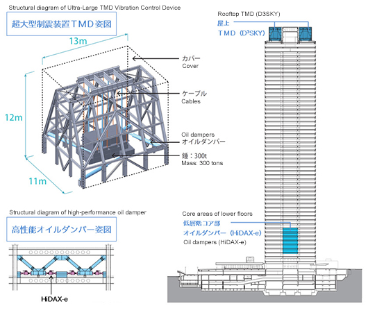
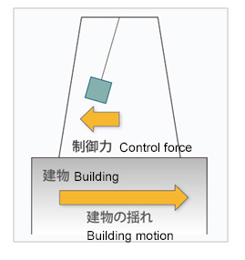
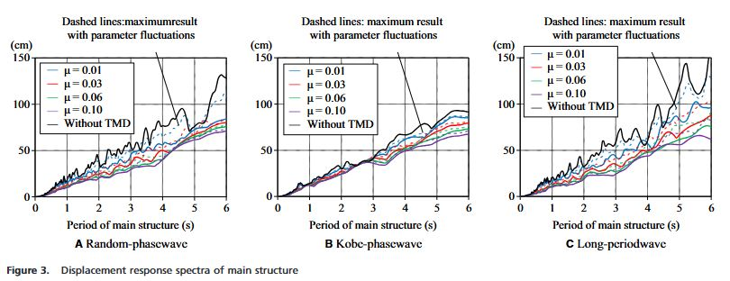

The Shinjuku Mitsui building in Tokyo was completed in 1974
(1)(Higashino, Kitamura and Kani, 2023) at the time being the tallest building in Japan, though this only lasted 4 years
(2)(Rafael Ivan Pazos Perez, 2014). In the 50 years since construction the building has undergone lots of modifications, bringing it up to modern standards. Most of which have occurred after the 2011 Japanese earthquake, and in the reconstruction since. This includes the addition of TMDs (tuned mass dampers) in 2015
(3)(Yirka, 2013). These work to move out of phase to the vibrations of the building caused by the earthquake, dissipating the energy and reducing the damage caused
(4)(Deicon dynamics and controls, n.d.). The building also contains Oil dampeners, which they began adding in 2013
(5)(Mitsui Fudosan Co., Ltd., Kajima Corporation, 2015). These do a similar job, to reduce the potential impacts of an earthquake, but work in different ways by absorbing the energy through fluid being compressed by large pistons
(6)(Jahnel, 2022). The investigation will see how these work in greater detail and how effective these sorts of techniques are in their aim of protecting the building from damage during earthquakes.
Introduction
Earthquakes accounted for 750,000 deaths between 1998 and 2017, affecting in total 125 million in this time
(7)(World Health Organization, 2024). Japan sits on the joint of 4 tectonic plates, (The north american plate, the Pacific, the philippine sea plate, the eurasian plate)
(8)(www.gsi.go.jp, n.d.). These plates move and grind against each other, this creates large pressure to build up, before being released as an earthquake. Japan as a result has the fourth highest number of major earthquakes since 1990, with 98
(9)(Buchholz, 2024). This poses quite an issue for those living there. Leading them to invest greatly in earthquake impact minimising engineering. In total Japan has spent over ¥3.2 Trillion Japanese yen (over £16 billion pounds) on such technology between 2020 and 2023 alone according to the Japanese cabinet office statistics
(10)(Klein, 2024a). The technologies used in the Shinjuku Mitsui building located in Tokyo will be analysed and it will be discussed how effective these measures are for the costs of refurbishing the structure.
Analysis and discussion
bloop
The building was constructed long before the technology of tuned mass dampeners was developed. So by 2013 it was agreed to bring the Shinjuku Mitsui building up to date. This is likely a decision made in wake of the 2011 Tohuku earthquake that destroyed an estimated 45,700 buildings, and damaging 190,000 in total
(13)(Norio et al., 2011). Costing ¥16 trillion in property damage alone
(13)(Norio et al., 2011). The building was also affected by the 2009 great east japan earthquake, which was observed to cause the building to sway by up to 2 metres
(3)(Yirka, 2013). The plan was to add 6 pendulums weighing roughly 300 tonnes each to the top of the building, it was estimated this would reduce swaying by 60%
(3)(Yirka, 2013). Figure 1 below shows the setup of where the tuned mass dampers would sit inside of the building, by sitting them at the top they would see the greatest displacement from the equilibrium position when the building sways, therefore providing the greatest reduction of energy. Figure 2 shows a simplified version of how when the building will shake to one side, the delayed motion of the pendulum will fight against this motion. The real TMDs put in the Shinjuku Mitsui building also include oil dampers attached, these smoothly deaccelerate the mass to avoid it causing any damage or resulting in the building swaying more. Figure 3 shows in graphical form the impact of TMDs with different masses on the period of the structure
(15)(SADEK et al., 1997). In figure 3, μ represents the the mass ratio as calculated by μ = m/M , with m being the mass of the tuned damper and M being the total mass of the structure
(16)(SADEK et al., 1997). Overall the figure shows how the size of vibrations (shown by the size of the period) can be reduced by installing tuned mass dampers.

Figure 1 (14)(Mitsui Fudosan Co., Ltd., Kajima Corporation, 2013)

Figure 2 (14)(Mitsui Fudosan Co., Ltd., Kajima Corporation, 2013)

Figure 3 (16)(Nakai et al., 2019b)
Oil dampeners
The Shinjuku Mitsui building also includes oil dampeners with an inertia motor on the 5th to 10th floors
(Nakai et al., 2019b), these were also added during the retrofitting that included the TMDs
(17)(Higashino, Kitamura and Kani, 2023).
Earthquakes since refurbishment
Since the refurbishment of the Shinjuku Mitsui building with the latest earthquake technology in 2015, Japan has seen 21 significant earthquakes
(11)(Noaa.gov, 2024). 7 of which had a magnitude of over 7.0
(12)(Worlddata.info, 2024).
References
below to be removed, just for copy and paste
()
() -